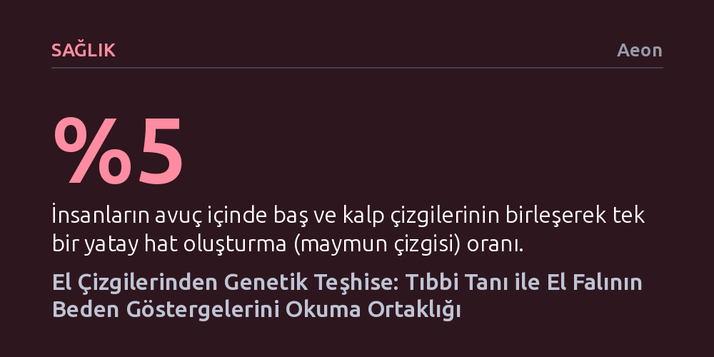

SAGLIK · Aeon · 2026-09-09
Tıbbi tanı geleneği, bedensel işaretleri okuma yöntemi bakımından el falıyla köklü bir tarihsel bağı paylaşır. Avuç içi çizgilerinin incelenmesi, okült bir kehanet uygulamasından Down sendromu gibi kromozomal anomalilerin teşhisinde kullanılan bilimsel bir göstergebilime evrilmiştir.
Bugün batıl inanç sayılan el falı ile modern tıbbi teşhisin, insan bedenini çözümlenmesi gereken bir metin olarak gören aynı göstergebilimsel kökten beslendiğini ortaya koyar.

Bir tıp tarihçisinin Londra'daki arşivlerde 1930'lu yılların Yahudi mülteci hekimi Charlotte Wolff'un evraklarını incelerken karşılaştığı devasa bir el izi, tıp tarihi ile kadim el falı arasındaki beklenmedik bağı gün ışığına çıkardı. Bu iz, Londra Hayvanat Bahçesi'nde ölen Mok adlı bir ova goriline aitti. Wolff, gorilin ölümünden hemen sonra morga girerek canlıyken alınması imkânsız olan bu el ayası kalıbını çıkarmıştı. Saygın bir tıp doktorunun el çizgilerine böylesine saplantılı bir ilgi duyması ilk bakışta büyü ve okültizmle uğraştığı izlenimini verse de, araştırmacının peşinde olduğu şey somut bir anatomik işaretti.
Wolff'un aradığı belirti, tıp literatüründe "maymun çizgisi" (simian crease) olarak bilinen ve el ayasını uçtan uca tek bir hat halinde kesen özel bir deri kıvrımıydı. İnsan embriyosunun erken gelişim evresinde avuç içinde normalde üç ana hat oluşur. Ancak insanların yaklaşık yüzde beşinde, baş ve kalp çizgisi olarak adlandırılan bu hatlar birbiriyle kaynaşarak tek bir enine çizgiye dönüşür. Robert De Niro ya da Tony Blair gibi tanınmış isimlerin ellerinde de rastlanan bu anatomik varyasyon, sıradan bir el falı merakının çok ötesinde klinik bir ağırlığa sahiptir.
Bugün doğumhanelerde ebeler ve yeni doğan uzmanları, dünyaya gelen bebeklerin avuç içlerini hâlâ dikkatle kontrol eder. Bunun sebebi bebeğin kaderini okumak değil; bu tek enine çizginin 21. kromozom anomalisi olan Down sendromlu bireylerde çok yüksek bir sıklıkla görülmesidir. Her maymun çizgisine sahip birey Down sendromlu olmadığı gibi, her Down sendromlu bireyde de bu çizgi bulunmaz. Yine de aralarındaki istatistiksel bağ o kadar güçlüdür ki, eldeki bu işaret modern genetik testlerin yaygınlaşmasına kadar klinik tanının temel taşlarından biri olmuştur.
Hekimler tıp tarihinin tuhaf ve şaşırtıcı yönlerini anlatmayı sevseler de, klinik teşhisin köklerinin el falına dayandığı gerçeğiyle yüzleşmekten genellikle kaçınırlar. Oysa bu geçmiş, modern bilimin kurucu figürlerine kadar uzanır. 1663 yılının yazında genç Isaac Newton, Cambridge'deki bir panayırdan bir hekim tarafından yazılmış el falı kitabı satın almıştı. Kitap, avuçtaki çizgilerin, açıların ve şekillerin pergel yardımıyla hassas bir geometri gibi ölçülerek matematiksel biçimde çözülmesi gerektiğini savunuyordu. Newton'un kütüphanesi, Paracelsus gibi hekimlerin el çizgilerinden sağlık ve mizaç okuma yöntemlerini anlatan eserleriyle doluydu.
Zamanla el çizgilerini okuma uğraşı, salt bir gelecek tahmini olmaktan çıkıp tıbbi bir prognoza ve modern anatomiye dönüştü. 19. yüzyılın büyük anatomisti Charles Bell, elin kusursuz tasarımını incelerken; Charles Darwin insanın iki ayağı üzerine kalkmasıyla serbest kalan elin alet yapma ve kavrama yeteneğinin türümüzü ayrıcalıklı kıldığını vurguladı. Parmak izi çalışmalarının öncüsü Jan Evangelista Purkinje, maymun ve insan avuçlarındaki çizgileri fleksiyon, ekstansiyon ve addüksiyon gibi modern anatomik terimlerle tanımlamaya çalışırken, meramını anlatabilmek için el falının hayat, evlilik ve Venüs çizgisi gibi geleneksel kavramlarına başvurmak zorunda kalmıştı.
Aynı dil aktarımı 20. yüzyılın başında klinik kayıtlarda da sürdü. Kendi adıyla anılacak sendromu tanımlayan ailenin bir üyesi olan Reginald Langdon Down, 1907 yılında kliniğine kabul ettiği bir hastanın dosyasında durumu tarif ederken el falı literatüründen ödünç aldığı "ellerde baş çizgisi yok" ifadesini kullandı. Fransız anatomist Paul Broca primatlar ile insanlar arasındaki avuç çizgilerini karşılaştırırken, Alman hekimler bu yapıyı "dört parmak çizgisi" olarak adlandırdı. Geleneksel kiromansinin terimleri, modern tıbbın klinik dağarcığını doğrudan biçimlendiriyordu.
Charlotte Wolff'un goril Mok'un el izini aldığı yıllarda, Londra'da bir başka önemli bilim insanı insan avucunu ve parmak desenlerini istatistiksel olarak inceliyordu. Tıbbi genetikçi Lionel Penrose, Francis Galton'un parmak izi çalışmalarını bir adım öteye taşıyarak el çizgilerini ölçülebilir bir biyometriye dönüştürdü ve bu alan "dermatoglifik" adını aldı. Penrose'un amacı batıl inançları diriltmek değil, insan bedenindeki dışsal işaretler ile henüz aydınlatılamamış içsel genetik yapı arasındaki örüntüleri yakalamaktı.
Bu süreçte avuçtaki maymun çizgisi, modern biyotıbbın en temel ikilisi olan "fenotip" (gözlemlenebilir fiziksel özellik) ile "genotip" (hücre çekirdeğindeki DNA kodu) arasındaki ilişkinin kusursuz bir örneğine dönüştü. Henüz Down sendromunun kromozomal sebebi bilinmiyorken, Penrose sadece fenotipten, yani çıplak gözle görülen el çizgilerinden hareket ederek istatistiksel bir tanı modeli kurmayı başardı. 1950'lerin sonunda Paris'teki araştırmacılar sendromun arkasındaki 21. kromozom fazlalığını keşfettiklerinde, uzun süredir görünür olan fiziksel işaret (fenotip), mikroskop altında nihayet görünür kılınan genetik ikiziyle (genotip) tam olarak eşleşti.
Kromozomların keşfiyle birlikte el çizgilerine dayalı bu klinik gözlemin terk edileceği düşünülebilirdi; fakat öyle olmadı. Genetik uzmanları el desenleri içeren şemaları mektuplarla birbirlerine göndermeye, avuç çizgileri üzerinden tanı tartışmaları yürütmeye devam ettiler. 1960'larda çocuk doktorları listeye "Sidney çizgisi" adını verdikleri yeni bir kıvrım eklediler; 1990'lara gelindiğinde ise maymun çizgisi artık anne karnındaki fetüsün ultrason görüntülerinde taranan ileri bir tıbbi gösterge haline gelmişti.
Geleneksel el falının göksel güçlerle kurduğu varsayılan mistik bağlar bugün tıp için elbette geçersizdir. Ancak bu kadim pratik ile çağdaş hekimlik arasında çok temel bir yapısal benzerlik vardır: Her ikisi de bedensel işaretleri okuma ve anlamlandırma esasına dayanır. Tıp eğitiminin ilk derslerinden biri, hastanın hissettiği sübjektif şikâyet (semptom) ile hekimin bizzat tespit edip yorumladığı nesnel bulgu (gösterge) arasındaki ayrımdır. Derideki bir döküntü kızamığa, tırnaklardaki sararma karaciğer rahatsızlığına, avuçtaki tek bir kıvrım ise kromozomal bir sendroma işaret eder. Bu yönüyle her hekim, temelde bir beden göstergebilimcisi gibi çalışır.
1920'lerde Londra'da görev yapan hekim Francis Crookshank, meslektaşlarının ve hastalarının ellerindeki çizgileri incelerken tıbbın acilen bir "işaretler teorisine" ihtiyaç duyduğunu savunmuştu. 1926'da Kraliyet Hekimler Koleji'nde hekimlerin aslında birer göstergebilimci olduğunu anlattığı konferansta meslektaşları sıkıntıdan uyuyakalsa da, Crookshank klinik pratiğin özünü yakalamıştı: İnsan bedeni üzerindeki işaretler gözlemlenir, adlandırılır ve onlara bir anlam yüklenir. 16. yüzyılda Paracelsus'un savunduğu gibi, insan bedeninde dışarıya bir işaret vermeyecek kadar saklı hiçbir şey yoktur.
Günümüzde Stanford Tıp Fakültesi gibi öncü kurumlar, yüksek teknolojili tarama cihazlarının gölgesinde kalan fiziksel muayeneyi yeniden canlandırmak amacıyla öğrencilerine bedeni bir metin olarak okumayı öğretmektedir. Bu kurumlarda geleceğin hekimlerine "Her hastanın bedeni bir hikâye anlatır" ilkesi aşılanmakta; muayenenin sadece geçmişi ve bugünü değil, prognoz yoluyla geleceği de okuma sanatı olduğu hatırlatılmaktadır. El falının kehanetlerinden genetiğin kromozom haritalarına uzanan bu asırlık serüven, modern tıbbın insan bedenini anlamlandırma tutkusunun ne denli köklü bir okuma geleneği olduğunu kanıtlamaktadır.